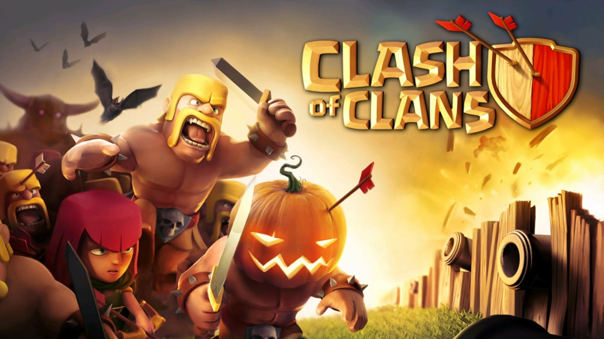
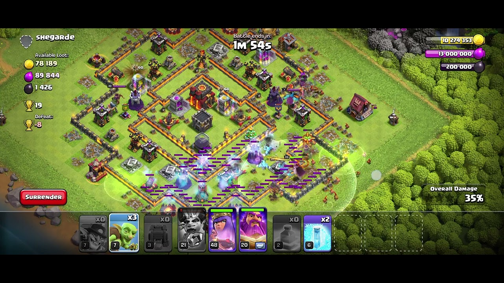
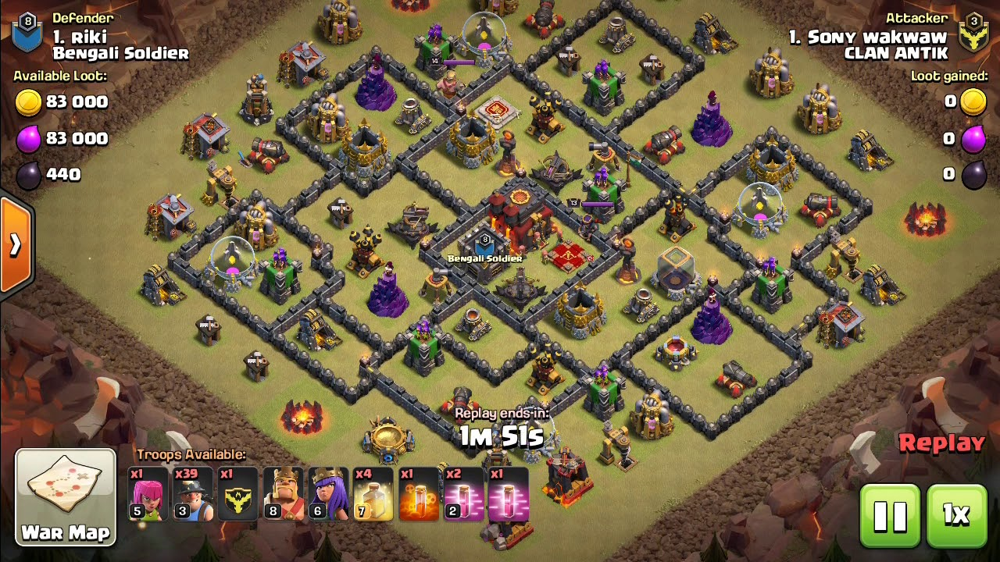

Strategia gestionale / Manageriale / Combattimento tra clan


Clash of Clans si configura come un gestionale strategico vecchio stampo, basato su una pianificazione attenta e sul lungo periodo. Il fulcro del gameplay risiede nella crescita del proprio insediamento: dovrai raccogliere oro ed elisir per potenziare le strutture difensive, addestrare l'esercito e proteggere i depositi dai saccheggi nemici, pianificando al contempo attacchi per radere al suolo i villaggi avversari.
Il difetto principale emerge ai livelli più alti, dove le tempistiche richieste per i potenziamenti diventano talmente bibliche da bloccare i progressi per giorni, a meno che non si decida di pagare. Inoltre, la ricerca dei rivali tende a proporti basi con difese nettamente superiori alle tue capacità di attacco. Anche elaborando la strategia perfetta, l'intelligenza artificiale delle unità a volte decide di ignorare gli obiettivi principali per perdersi lungo le mura.
Il pilastro della community è indubbiamente la Guerra tra Clan. Qui un gruppo di massimo 50 giocatori sfida un clan rivale in un conflitto organizzato su due giornate: la prima per studiare i bersagli e donare truppe difensive, la seconda per sferrare gli attacchi. Ogni partecipante ha a disposizione due attacchi per cercare di strappare tre stelle alle basi nemiche. Questa dinamica cementa il gruppo e garantisce ricompense colossali, anche se il gioco si porta dietro una forte componente "pay to fast".
